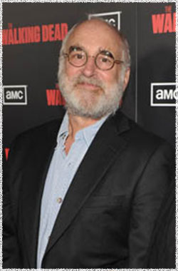

Джеффри ДеМунн
 Дэйл (актёр Джеффри ДеМунн) - продавец автомобилей вышедший на пенсию. Отправился со своей женой через всю Америку за 2 года до зомби апокалипсиса. Является хозяином лагеря для выживших на окраине города.
Джеффри ДеМунн (Jeffrey DeMunn) - американский актёр, родился 25 апреля 1947 года в США в городе Баффало штат Нью-Йорк.
Джеффри окончил Union College и проходил подготовку в Bristol Old Vic в Англии. По возвращении в США он гастролировал по стране с National Shakespeare Company и провёл несколько летних сезонов в Театральном Центре Юджина О'Нила содействуя в создании новых постановок.
Карьера Джеффри ДеМуна включает в себя театр, кино и телевидение. Он известен как любимый актёр режиссера Фрэнка Дарабонта, который приглашал его в фильмы: Shawshank Redemption (Побег из Шоушенка), Green Mile (Зелёная миля), Majestic (Мажестик) и Mist (Мгла) Стивена Кинга, включая в том числе римейк фильма 1988 года Blob (Капля).
Также в его фильмографию входят: Burn After Reading (После прочтения cжечь), Shelter (Убежище), Caymen Went, Hollywoodland (Смерть супермена), X-Files Movie, Phenomenon и Blaze, а также ранние выступления в Resurrection and Frances.
Его телевизионная работа была удостоена номинации EmmyВ и премии Cable Ace за роль Андрея Чикатило в фильме Citizen X (Гражданин X). В дополнение к этому имеет роль второго плана в сериале Law & Order (Закон и порядок) и многочисленные эпизодические роли.
Он был номинирован на TonyВ за свою игру в К-2 на Бродвее. Участвовал в большом количестве театральных постановок.
Наиболее известен своими ролями в фильмах:
Побег из Шоушенка (Shawshank Redemption)
Зеленая миля (Green Mile)
Ходячие мертвецы (The Walking Dead)
Мажестик (Majestic)
Феномен (Phenomenon)
Попутчик (Hitcher)